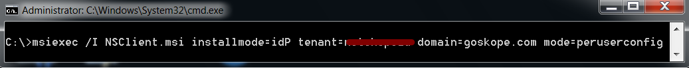

Install the Netskope Client in IdP Mode and Enroll Users For Windows
The Netskope Client (v71 and above) can be installed a couple of ways for IdP mode.
Install NSClient.msi without any parameters (This will prompt user for the Netskope tenant name and then OKTA login details)
Install NSClient.msi with IDP parameters in multi-user mode (This will prompt user for OKTA login details only) – This can also be packaged and deployed via software deployment tools
The steps below are for installing the Client with IdP parameters, which is recommended so users do not have to remember the tenant name; only their IdP login details.
Note
Download the NS Client for Windows from your Home POP:
https://download-<tenant name>.goskope.com/dlr/win/get
https://download-<tenant name>.eu.goskope.com/dlr/win/get
https://download-<tenant name>.de.goskope.com/dlr/win/get
You need admin rights to deploy the NS Client onto the endpoints.
Enter these parameters:
msiexec /I NSClient.msi installmode=IDP tenant=<tenant name> domain=<goskope.com / eu.goskope.com / de.goskope.com> mode=peruserconfig
 Installation will start. After installation completes, click Finish.

This will prompt user for Okta login ID and password. This window will continue to prompt user until credentials have been entered. Enter your credentials and click sign-in.

If this is the first time you're logging into OKTA, then follow the prompts to complete the Okta registration, and then click Create My Account.

The Sign-in process continues.

After successful login, the Netskope Client will validate the email address of the user in the tenant, and then download the configuration files from the tenant,

After configurations files have been downloaded successfully, the Client will enroll itself and display Enrolled successfully. Click X to close the window, or it will auto close in 5 seconds.

Right-click the Netskope Client and select Configuration. That will display the email address registered on the device.

User can also Unenroll if the option is enabled in the tenant under Settings > Active Platform > Devices > Client Configurations.

In Okta, you can check the logs and it will display three events when user signs-in to the Netskope User Enrollment app in Okta.